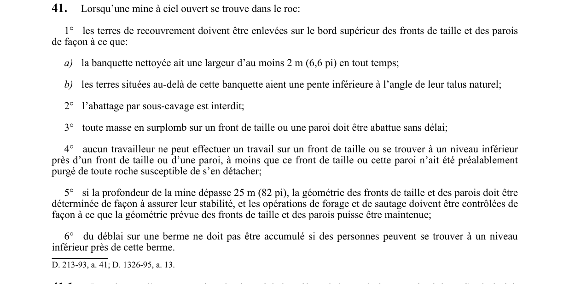

art-41-RSSM : mine ciel ouvert purgeage stabilité
Un article du wiki ⚖️ Recueil législatif
En bref
Dans une mine à ciel ouvert dans le roc, les terres de recouvrement doivent être enlevées pour maintenir une banquette nettoyée d'au moins 2 m. Cette obligation vise l'employeur.
- Et toute masse en surplomb doit être abattue sans délai.
- La présence d'une excavation sismique doit être établie par écrit par un ingénieur.
- Sous-cavage interdit.
- Aucun travailleur sur front non purgé.
- Profondeur > 25 m : géométrie par ingénieur et forage-sautage contrôlé.
- Excavation sismique délimitée et identifiée par ingénieur avant travaux.
- Travaux dans excavation sismique avec équipement mécanisé en cabine fermée conforme à plans ingénieur.
🌐 LegisQuébec · 📄 PDF officiel
Texte officiel : capture du PDF

Toucher l'image pour l'agrandir🔗 Voir art. 41 RSSM dans le PDF (page 22)
Version : texte officiel du RSSM (RLRQ c. S-2.1, r. 14), à jour au 1er mai 2024 — Éditeur officiel du Québec
Voir aussi
- art. 39 : distance chantier abattage puits circulation · interdiction : un chantier d'abattage ne doit pas être situé à moins de 6 m d'un puits servant à la circulation des personnes ou à l'extraction.
- art. 40 : exploitation argile sable gravier gradins · interdiction : dans toute exploitation d'argile, de sable, de gravier ou autres substances minérales de faible cohésion, le sous-cavage est interdit, les arbres situés à moins de 10 m du bord supérieur des fronts doivent être enlevés.
- art. 42 : espace libre voies circulation souterraines · obligation : pour tout développement commencé à compter du 1er avril 1993, un espace libre d'au moins 2 m au-dessus du plancher doit être maintenu dans une voie de circulation souterraine ; lorsque des véhicules y circulent.
- art. 43 : baies sécurité voies rail souterraines · obligation : dans une voie souterraine où circulent des véhicules sur rail, soit un espace piéton d'au moins 450 mm de chaque côté ou de 600 mm d'un seul côté doit être prévu, soit des baies de sécurité d'au moins 1,5 m de largeur, 1,5 m de profondeur.
- ⚖️ Loi habilitante : LSST
- ↑ Index du bloc : Aménagement du chantier
Pages qui pointent ici (8)
- art-39-RSSM : distance chantier abattage puits circulation Recueil législatif
- art-40-RSSM : exploitation argile sable gravier gradins Recueil législatif
- art-403-RSSM : Seuls explosifs ensemble produisant fumées Recueil législatif
- art-415-RSSM : explosifs trouvant terre surface surveillance Recueil législatif
- art-42-RSSM : espace libre voies circulation souterraines Recueil législatif
- art-426-RSSM : détonateurs micro-connecteurs entreposés remisés types Recueil législatif
- art-43-RSSM : baies sécurité voies rail souterraines Recueil législatif
- RSSM : Aménagement du chantier (art. 12 à 99) Recueil législatif